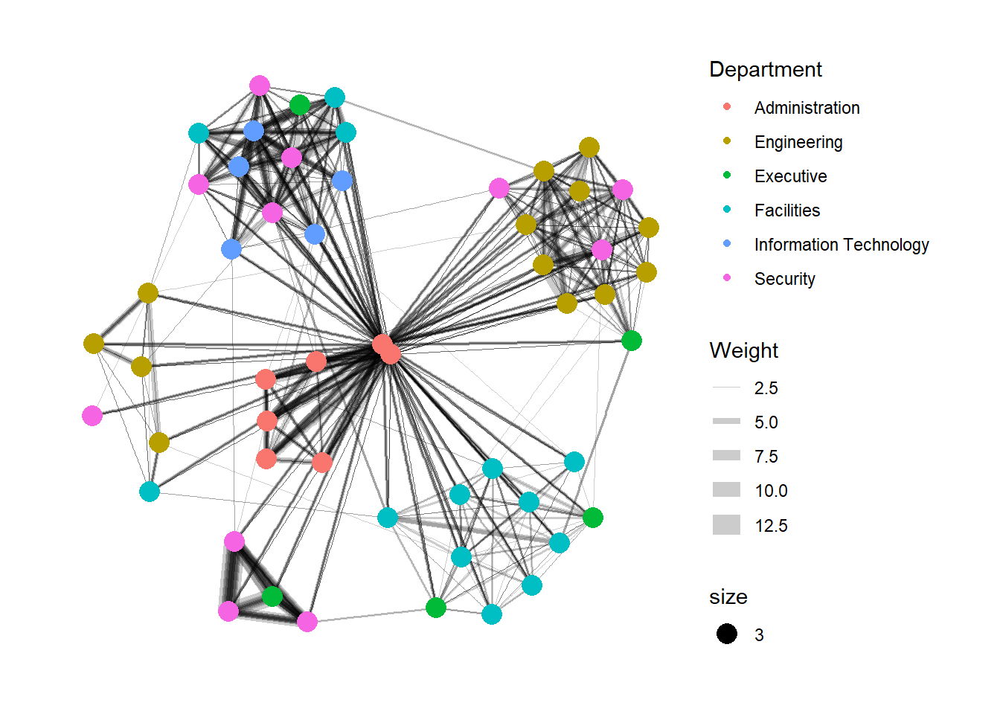

pacman::p_load(igraph,tidygraph,ggraph,visNetwork,tidyverse,lubridate,clock,graphlayouts)In-class Exercise 9
1. Installing R Packages
clockonly meant for timelubridatemeant for date
2. Importing Data
GAStech_email_node.csv and GAStech_email_edges-v2.csv are imported into RStudio environment by using read_csv() of readr package.
GAStech_nodes <- read_csv("data/GAStech_email_node.csv")
GAStech_edges <- read_csv("data/GAStech_email_edge-v2.csv")3. Wrangling Data
3.1 Wrangling Time
GAStech_edges <- GAStech_edges %>%
mutate(SendDate = dmy(SentDate)) %>%
mutate(Weekday = wday(SentDate,
label = TRUE,
abbr = FALSE))wday used to extract Weekday from the SentDate and label = TRUE to ensure they are labelled.
3.2 Wrangling Attributes
GAStech_edges_aggregated <- GAStech_edges %>%
filter(MainSubject == "Work related") %>%
group_by(source, target, Weekday) %>%
summarise(Weight = n()) %>%
filter(source != target) %>%
filter(Weight > 1) %>%
ungroup()
GAStech_edges_aggregated# A tibble: 1,372 × 4
source target Weekday Weight
<dbl> <dbl> <ord> <int>
1 1 2 Sunday 5
2 1 2 Monday 2
3 1 2 Tuesday 3
4 1 2 Wednesday 4
5 1 2 Friday 6
6 1 3 Sunday 5
7 1 3 Monday 2
8 1 3 Tuesday 3
9 1 3 Wednesday 4
10 1 3 Friday 6
# ℹ 1,362 more rowsFilter to pick out work-related emails
group_by to aggregate communication by weekday
Summarise to gather the number of counts of communication
Filter out emails for which source and target are the same
Filter out single/one-time emails aka looking for email communication with at least 2 emails
4. Creating network objects using tidygraph
4.1 Using tbl_graph() to build tidygraph data model
nodes and edges need data in data.frame - the syntax however does not elaborate what type of data.frame
To check what data.frame the data is in, have to use command called “class(GAStech_nodes):
class(GAStech_nodes)[1] "spec_tbl_df" "tbl_df" "tbl" "data.frame" shows that it is a tbl data.frame
test with the code to see if it works:
GAStech_graph <- tbl_graph(nodes = GAStech_nodes,
edges = GAStech_edges_aggregated,
directed = TRUE)directed used to indicate whether directed or undirected email. for emails, it is always directed = TRUE as emails back-and-forth might not be equal in number.
you would realise that the GAStech_graph components are igraph objects
GAStech_graph# A tbl_graph: 54 nodes and 1372 edges
#
# A directed multigraph with 1 component
#
# Node Data: 54 × 4 (active)
id label Department Title
<dbl> <chr> <chr> <chr>
1 1 Mat.Bramar Administration Assistant to CEO
2 2 Anda.Ribera Administration Assistant to CFO
3 3 Rachel.Pantanal Administration Assistant to CIO
4 4 Linda.Lagos Administration Assistant to COO
5 5 Ruscella.Mies.Haber Administration Assistant to Engineering Group Mana…
6 6 Carla.Forluniau Administration Assistant to IT Group Manager
7 7 Cornelia.Lais Administration Assistant to Security Group Manager
8 44 Kanon.Herrero Security Badging Office
9 45 Varja.Lagos Security Badging Office
10 46 Stenig.Fusil Security Building Control
# ℹ 44 more rows
#
# Edge Data: 1,372 × 4
from to Weekday Weight
<int> <int> <ord> <int>
1 1 2 Sunday 5
2 1 2 Monday 2
3 1 2 Tuesday 3
# ℹ 1,369 more rowsThe number of nodes and edges must correspond to number of observations in GAStech_nodes and GAStech_edges_aggregated.
5. Computing ggraph
ggraph(GAStech_graph) +
geom_edge_link() +
geom_node_point()
Simple graph generate with same colour and size for the nodes as not defined within the code.
Cannot just use geom_node and geom_link as these are already available in ggplot hence naming under ggraphis different
Tip
links always give straight lines while arc give curve lines
ggraph give extra geom objects to help create graphs
5.1 Editing the colour
We now make use of the arguments within geom_edge_link and geom_node_point:
g <- ggraph(GAStech_graph) +
geom_edge_link(aes(colour = "grey50")) +
geom_node_point(aes(colour = "grey40"))
g + theme_graph(background = "grey10",
text_colour = "white")
5.2 Editing graph layout
g <- ggraph(GAStech_graph,
layout = "fr") +
geom_edge_link(aes()) +
geom_node_point(aes())
g + theme_graph()More details about layout option can be referenced here based on ggraph website:
Changing to another layout kk:
g <- ggraph(GAStech_graph,
layout = "kk") +
geom_edge_link(aes()) +
geom_node_point(aes())
g + theme_graph()
Changing to another layout nicely:
g <- ggraph(GAStech_graph,
layout = "nicely") +
geom_edge_link(aes()) +
geom_node_point(aes(colour = Department,
size = 3))
g + theme_graph()In the above, added colour and changed size for nodes.
We will revise the code further under geom_edge_link:
g <- ggraph(GAStech_graph,
layout = "nicely") +
geom_edge_link(aes(width=Weight),
alpha = 0.2) +
scale_edge_width(range=c(0.1,5)) +
geom_node_point(aes(colour = Department,
size = 3))
g + theme_graph()
alpha is level of opacity
since introduced thickness width=Weight, need to add in
scale_edge_widthto provide instructions on how to spread out the thickness.
6. Creating facet graphs
6.1 Facet edge
set_graph_style()
g <- ggraph(GAStech_graph,
layout = "nicely") +
geom_edge_link(aes(width=Weight),
alpha = 0.2) +
scale_edge_width(range=c(0.1,5)) +
geom_node_point(aes(colour = Department),
size = 2)
g + facet_edges(~Weekday)The overall layout of the graphs are the same, able to see the differences across different days of the week.
6.2 Facet node
set_graph_style()
g <- ggraph(GAStech_graph,
layout = "nicely") +
geom_edge_link(aes(width=Weight),
alpha = 0.2) +
scale_edge_width(range=c(0.1,5)) +
geom_node_point(aes(colour = Department),
size =2)
g + facet_nodes(~Department) +
th_foreground(foreground="grey80",
border = TRUE) +
theme(legend.position = "bottom")At Executive level, you can see that they hardly talk to each other.
7. Network metric analysis
As shown here and in screenshot below, centrality under ggraph is consolidated as such:

However when looking at igraph, centrality codes are spread out i.e. syntax is not consistent, for instance can have names like below:
7.1 Calculating centrality indices
g <- GAStech_graph %>%
mutate(betweenness_centrality = centrality_betweenness()) %>%
ggraph(layout = "fr") +
geom_edge_link(aes(width=Weight),
alpha=0.2) +
scale_edge_width(range=c(0.1,5)) +
geom_node_point(aes(colour=Department,
size=betweenness_centrality))
g + theme_graph()Note that betweenness_centrality does not appear in the datatable. help to adjust the size accordingly.
8. Interactivity
uses visNetwork package, will need to adjust dataset
GAStech_edges_aggregated <- GAStech_edges %>%
left_join(GAStech_nodes, by=c("sourceLabel" = "label")) %>%
rename(from = id) %>%
left_join(GAStech_nodes, by=c("targetLabel" = "label")) %>%
rename(to=id) %>%
filter(MainSubject == "Work related") %>%
group_by(from, to) %>%
summarise(weight = n()) %>%
filter(from!=to) %>%
filter(weight>1) %>%
ungroup()GAStech_nodes <- GAStech_nodes %>%
rename(group=Department)visNetwork(GAStech_nodes,
GAStech_edges_aggregated) %>%
visIgraphLayout(layout="layout_with_fr") %>%
visOptions(highlightNearest = TRUE,
nodesIdSelection = TRUE) %>%
visLegend() %>%
visLayout(randomSeed = 123)